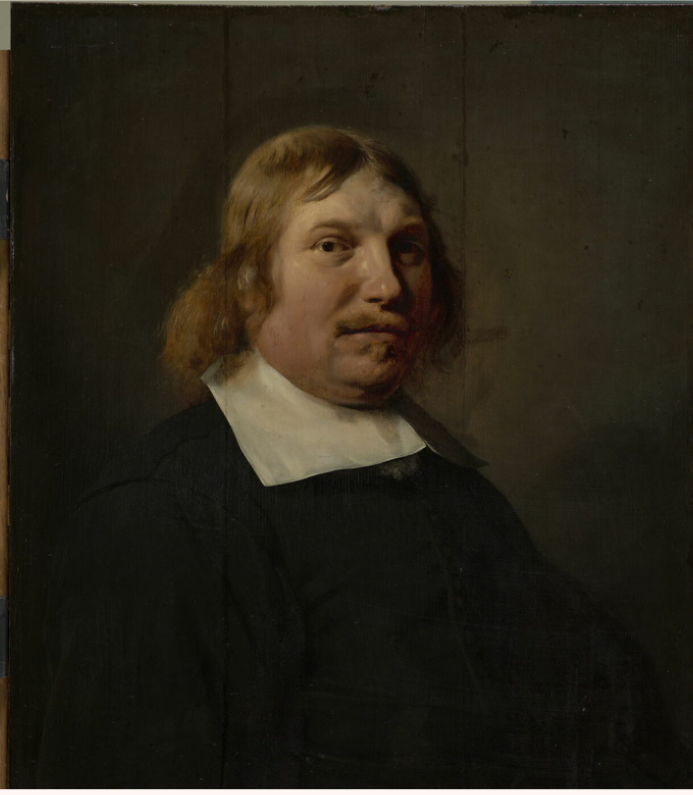
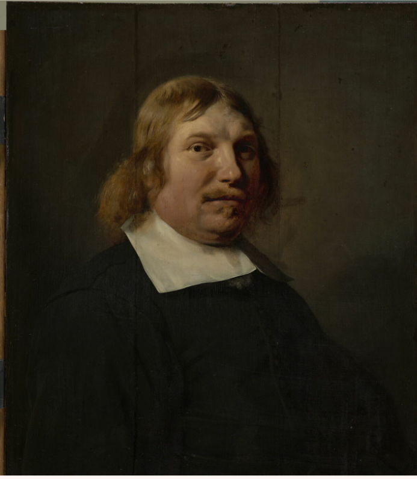

Le vendredi 23 novembre 2023, j'ai eu l'opportunité, dans le cadre d'un projet de communication, de participer à une médiation nocturne au Louvre.
Une étudiante en science des données en tant que médiatrice au Louvre ?
Le Louvre organise parfois des nocturnes spéciales pour les étudiants universitaires, où des classes de diverses disciplines viennent proposer des médiations en lien avec leur formation.
Notre projet portait sur l'intelligence artificielle (IA) et son rapport avec l'art. En binôme, nous avions pour mission de faire une présentation sur ce thème, mettant en avant une œuvre exposée au Louvre et établissant des connexions avec notre cursus. Avec mon binôme, notre choix s'est porté sur le "Portrait d’homme" de Jean de Bray, datant du 17e siècle, comme œuvre exposée au Louvre. Pour notre lien avec notre cursus, nous avons opté pour le "Duc de Belamy", une création de 2018 issue d'une IA conçue par le groupe Obvious. Nous avons ainsi mis en lumière comment cette IA a réussi à intégrer tous les codes stylistiques des 17e et 18e siècles, tout en détaillant son mode de fonctionnement.
Nous avons développé notre éloquence et notre communication en public. Nous avons appris comment captiver notre auditoire et les rendre intéressés. Nous avons proposé un système de quiz pour les faire participer. La plus grande difficulté a été, je pense, de gérer notre stress, car il ne faut pas l'oublier, ce n'est pas un exercice commun.